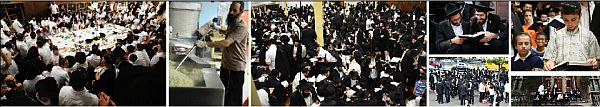

אבא היקר,
על חשיבות הנסיעה לרבי אין צורך לדבר. כל חסיד מבין, שהיום כדי לחיות עם הרבי ולהיות חסיד אמיתי, הרי שחייבים, אבל פשוט חייבים, לפחות פעם בשנה לארוז את כל הפקלאות ולעלות על מטוס ולשהות כמה שיותר אצל הרבי. וכפתגם הידוע: רבי לא שנה — חייא מניין?!…
אבא היקר,
לפניך יומן חי המתאר את חלקו הראשון של חודש תשרי ה’תשע”ו — שנת הקהל — בד’ אמותיו של נשיא הדור כ”ק אדמו”ר מלך המשיח שליט”א.
על חשיבות הנסיעה לרבי אין צורך לדבר. כל חסיד מבין, שהיום כדי לחיות עם הרבי ולהיות חסיד אמיתי, הרי שחייבים, אבל פשוט חייבים, לפחות פעם בשנה לארוז את כל הפקלאות ולעלות על מטוס ולשהות כמה שיותר אצל הרבי. וכפתגם הידוע: רבי לא שנה — חייא מניין?!…
החידוש השנה הוא, שזו שנת הקהל, ובשנת הקהל נוסעים אל המלך כולם ממש — אנשים, נשים וטף. יש בקשר לכך התייחסויות מפורשות מהרבי בשיחות קודש מוגהות (והן נלקטו בספר “קהל גדול” שיצא לאור זה עתה במהדורה חדשה). נכון, זו משימה יקרה, מורכבת וכלל לא פשוטה, אבל היא אפשרית ונחוצה כיום יותר מתמיד — כי כדי לחיות, חייב כל מי שהדבר מתאפשר לו, להעלות השנה כל המשפחה על המטוס ולהיקהל אל המלך.
בהתאם לכך, שמחתי מאוד לשמוע על כך שכל משפחתנו היקרה מגיעה בעוד ימים ספורים לחצרות קודשנו, ומקיימת את מצות הקהל הלכה למעשה בפועל ממש. זו זכות עצומה וגדולה ביותר שלא כל משפחה זוכה לה, והיא שווה יותר מכל הון שבעולם!
במצבנו הנוכחי, בחושך הגלות הכפול והמכופל בו אנו נמצאים כעת (ויהי רצון שדברים אלו כבר לא יהיו נכונים בשעת הדפסת הדברים), החובה לחזק את רגשי חום ההתקשרות למקור חיותינו אצל כל אחד ואחד מבני המשפחה — אנשים נשים וטף — הוא עצום ומרומם ביותר. ואשריך ואשרי משפחתנו הזוכה לכך!
— להתראות בהקהל הגדול שיתקיים השנה בעז”ה ב–770 כפי שהוא מחובר לביהמ”ק השלישי והמשולש, בהתגלותו המושלמת של הרבי מלך המשיח שליט”א תיכף ומיד ממש!
יחי אדוננו מורנו ורבינו מלך המשיח לעולם ועד!
בנך מענדי,
בית משיח — 770

למרות אמירת הסליחות וריקודי השמחה שהסתיימו אמש (מוצאי שבת סליחות) בשעת לילה מאוחרת, בסדר חסידות בוקר כבר נוכחים תמימים רבים השוקדים בהתמדה ובשקיקה בלימוד מאמרי חסידות בעניני דיומא.
הספסלים מסודרים בסדר מיוחד של חודש תשרי, כך שכל השולחנות הרחבים המשמשים את תלמידי הישיבה בלימודם במשך כל ימות השנה מוצאים מבית חיינו, ובמקומם מוכנסים ספסלים צרים שישמשו את אלפי האורחים בתפילות ובסדרי הלימוד.
עם שחר יום שני יום ב’ דסליחות, האולם הגדול בבית חיינו מלא וגדוש במאות מאנ”ש והתמימים, המשכימים ומשתתפים באמירת הסליחות במניינו של הרבי מלך המשיח שמתחיל עם אמירת “אשרי” בשעה 7:00 בבוקר.
המחלקה הגשמית של הארגון הרשמי “אש”ל — הכנסת אורחים” פותחת את שעריה עבור ההמונים הפוקדים את בית חיינו. חדר הרישום מתחיל בפעילותו לקליטת וסידור אלפי האורחים על הצד הטוב ביותר. השנה ניכרת ומורגשת התארגנות והיערכות מבעוד מועד, מה שנותן את אותותיו לכל לראש בדירות וחדרי האירוח המטופחים, שהושקע בהם עמל רב על–ידי צוותות שלמים העמלים על כך לילות כימים.
סדר אחדות ענק של לימוד “ליקוטי שיחות” לכלל תלמידי התמימים מתקיים בקידמת 770. בסיומה נערכת כמידי יום שני התוועדות לחיזוק האמונה בהתגלותו של הרבי מלך המשיח בפינה הצפונית מזרחית, ומשתתף בה קהל רב. מספר התוועדויות נערכות ברחבי 770 לכבוד “יום ג’ דסליחות”, וממשיכות עד אור הבוקר.
בסדרי הלימוד של יום שלישי, ניכרת תכונה מיוחדת בזאל הגדול בבית חיינו. סדרי הלימוד המאורגנים על–ידי “אש”ל — הכנסת אורחים” נפתחו בצורה רשמית ותלמידי התמימים מישיבות חב”ד בארה”ק ומכל רחבי תבל ממלאים את ספסלי 770 ושוקדים על לימוד חסידות, נגלה, הלכה וענייני גאולה ומשיח מתוך חוברות לימוד שנערכו בכישרון רב על–ידי מספר ר”מים ומשפיעים.
דאגתם של ארגון “אש”ל הכנסת אורחים” עבור תלמידי התמימים המבקשים לנצל את ימי שהותם אצל הרבי ללימוד בחצרות קדשינו, מורגשת היטב בשורה של שידרוגים:
— בימים בהם לא נערכת קריאת התורה, דאגו — בתיאום עם הגבאים — להוציא את בימת הקריאה אל מחוץ לבית חיינו, ובמקומה מוכנסים עשרות ספסלים במרכז הזאל הגדול, כך מתווספים מקומות ישיבה עבור מאות בחורים.
— קבצי הלימוד המהודרים שנערכו ויצאו לאור על–ידי המחלקה הרוחנית של “אש”ל הכנסת אורחים”, נערכו בטוב טעם כך שחולקו לפי ימים ולא לפי תקופות, מה שמקל על הלימוד.
— בכל יום בשעות הצהריים, נערכים שיעורים מיוחדים לתלמידי הישיבות קטנות, כשהשנה, השיעור העיוני נסוב בכל יום על נושא אחר בענייני גאולה ומשיח, בתוספת לימוד גמרא וסוגיות עיוניות בנגלה.
האורחים זורמים
דלתות הכניסה ל–770 נחסמות שוב ושוב במאות מזוודות. אלו ימים בהם נוחתים מדי יום מאות ואלפי אורחים, הצועדים אל שערי בית חיינו בפנים קורנות מאושר על הזכות הגדולה שנפלה בחלקם להיות “האורחים שלי” כפי שהרבי כינה אותם, ולשהות במחיצתו בחודש השביעי, שנת הקהל, תשע”ו.
מה נעים לראות את המחזה המשובב–נפש בו נפגשים ומתחבקים תמימים וחסידים עם אחיהם ורעיהם, אותם לא ראו זמן רב. אהבת חסידים.
ביום בריאת העולם, יום רביעי כ”ה אלול, ניגש כשליח–ציבור לאמירת הסליחות הבעל–תפילה הרב חיים דובער זלצמן משלוחי הרבי לניו ג’רסי, והן נמשכות מעבר לזמן הרגיל כשהוא מנעים בקולו את אמירת הסליחות ומרגש מאוד את הנוכחים.
אלפי האורחים התמימים ומאות אנ”ש שבאו להסתופף בד’ אמותיו של הרבי מלך המשיח בחצרות קדשינו, הוגים ושוקעים בהתלהבות בהוויות אביי ורבא, מפצחים סוגיות באחרונים לאור שיחותיו של הרבי מלך המשיח, מתעמקים בחיות במאמרי חסידות ומתפלפלים בתורתו של משיח ומשננים דינים והלכות שהזמן גרמא.
“גישמאק [תענוג] לשמוע את קול התורה בוקע מ–770”, נשמע אחד מתושבי קראון הייטס. כך כל מי שנקלע לבית חיינו בשעת סדרי הלימוד המאורגנים על–ידי “אש”ל — הכנסת אורחים”, מתקשה להסתיר את התרגשותו והתפעלותו מהמחזה המפליא הזה. תלמידי התמימים גורמים לרבי נחת רוח עצום.
היום מכריזים מהמחלקה הרוחנית של “אש”ל הכנסת אורחים” על פתיחת מבצע לימוד תורני הנקרא בשם “כי בא מועד”, במסגרתו ינצלו האורחים את השעות הפנויות ללימוד שיחות, מכתבים ומאמרים מתוך חוברת המבצע, ובסיומו יתקיים מבחן קצר שיזכה את המשתתפים בהגרלה על פרסים יקרי ערך.
המבצע מוסיף רוח וחיות לאווירת הלימוד הרצינית השוררת בימים אלו בבית חיינו גם בלאו הכי, וכך מתכוננים האורחים לימים–טובים כיאה.
שיעורים ופאנלים
הדוחק של האורחים שלא מפסיקים לזרום מורגש היום היטב בייחוד במניינים של הרבי. לאחר תפלת מנחה מתיישבים מאות לשיעור רבתי בענייני גאולה ומשיח שנערך במרכז 770, ונמסר היום על–ידי המשפיע הרב אלעזר קעניג מנצרת עלית, שפותח בהפרש בין כ”ה אלול — יום בריאת העולם, לבין ראש השנה — יום ברוא האדם, ומעורר את הקהל על חשיבות עבודתנו אנו — עבודת האדם להראות באצבע ולומר “הנה אלוקינו זה” ו”הנה זה משיח בא”!
לקראת 7 בערב נסגר הזאל הגדול, עקב כינוס נשים שנערך בתאריך זה מידי שנה — בהשתתפותו של הרבי מלך המשיח, כשמקומו הק’ מסודר ומוכן כפי הנהוג כל השנים על–גבי בימת ההתוועדויות. תלמידי התמימים והאורחים עוברים ללמוד בעזרת נשים קינגסטון ובחדרי לימוד נוספים.
ההתארגנות של “אש”ל הכנסת אורחים” בחדר האוכל המרכזי לתלמידי התמימים בבניין הישיבה 1414, מעוררת השתאות: בכל ארוחה מוגשים בסדר מופלא אלפי מנות אוכל איכותיות עבור האורחים, וצוות מיומן של תמימים ואברכים עמלים על הכנת כל ארוחה וארוחה במשך שעות ארוכות, כשהתוצאות ב”ה משביעות רצון (תרתי משמע).
המוטו של הארגון “אש”ל — הכנסת אורחים” שהופקד על–ידי הרבי לדאוג לאורחים ברוחניות ובגשמיות הוא: לאורחים של הרבי — מגיע הכי טוב שיש!
בשעה שמונה בערב נערך ב”געצל’ס שול” פאנל מרתק בהשתתפות הרב שלמה מאיעסקי משפיע ומנהל ‘מכון חנה’ והרב שלום יעקב חזן מעורכי “בית משיח” וחבר “אוצר החסידים”, המוקדש לתיאור והפלאת מעמד התקיעות המצמרר עם כ”ק אדמו”ר מלך המשיח שליט”א — בו נזכה כולנו להשתתף וגם לשמוע בשני ימי ראש השנה הבעל”ט. קהל רב נוכח בפאנל ומפנים את חשיבות וקדושת המעמד ומחליט להתכונן אליו כראוי.
בסיום הסדרים מתקיימת התוועדות בקדמת 770 עם שליח הרבי לבית שאן הרב שלום בער שמולביץ. במהלך ההתוועדות מדבר בלהט שעלינו להעריך את הזכות הנפלאה שנפלה בחלקנו להיות אורחיו של הרבי, ועל כך שעלינו לנצל את הזמן בהתאם. “הגעתי לרבי רק לראש השנה כי עלי לחזור למקום השליחות”, אמר הרב שמולביץ, “וזה גורם לי לנצל את הזמן היטב ביודעי שאני כאן רק לימים ספורים. הנני מציע שגם שאר האורחים יציירו לעצמם מציאות דומה (כאילו הם באו לרבי לראש השנה בלבד), על ידי זה הם ינצלו במירב כל רגע ורגע”.
ברכות “הגומל” נרגשות נשמעות מכל עבר בשעת קריאת התורה של יום חמישי. לקראת שבת, ממשיכים להגיע עוד ועוד אורחים והזרם רק הולך וגובר.
כל מי שמעיף מבט קל באלפים שממלאים את היכל בית חיינו, אינו יכול שלא להתפעל. ההרגשה והתחושה כאן היא ברורה וחזקה: הרבי חי וקיים! ‘ליובאוויטש איז אקטיב’, חב”ד חיה וקיימת! הנה הגיעו המוני המונים אל הרבי, ורצונם הפשוט הוא אחד ויחיד: להתמסר לרבי ללא גבול ולראות בהתגלותו במלוא הדר גאון עוזו!
המסגרת הייחודית של “אש”ל הכנסת אורחים” עבור הילדים “מחנה משיח”, מורגש ופועל במלוא המרץ, כשעליו מנצח צוות אחראי ומנוסה של מדריכים חסידיים הדואגים לשלומם של הילדים בגשמיות ולחינוכם ולימודם ברוחניות במשך כל שעות היום.
התפילות במניינים של הרבי מלוות לפתע בקול הילדים המתפללים בהתלהבות ורצינות תהומית כמו שרק אצל הרבי אפשרי, וזעקת “יחי אדוננו” הזכה והטהורה היוצאת מפיהם בסיום התפילות אל מול פני הקודש מרקיעה שחקים ומרעידה את הלבבות.
כצופה מן הצד, מרגש להתבונן בעוצמה של חיילי צבאות ה’ החוגגים את חודש החגים במחיצתו של אביהם, ראש בני ישראל. הנה, הגיעו גם הם אל המלך לשנת הקהל, ורצונם העז והתקיף הוא לא רק להראות אלא גם לראות; אם כן מדוע מתמהמהת עדיין ההתגלות?!…
לאחר תפלת מנחה במניינו של הרבי נערך כמידי יום מימי חודש תשרי, מתקיים היום (חמישי) שיעור גאולה ומשיח מרכזי שנמסר על–ידי השליח הרב שלום בער שמולביץ על קבלת מלכותו של הקב”ה בראש השנה הקשורה עם קבלת מלכותו של מלך המשיח, בהמשך לזה אמר:
“בתשרי ישנם מאות רגעים, גדולים וקטנים. לפעמים עלולים קצת להתבלבל מרוב שפע הקדושה, אך יש לדעת דבר אחד: אם במשך כל החודש הגדול הזה הגעת — אפילו רגע אחד וקטן — לידי צעקה פנימית מעצם הנפש שבה הבטחת “רבי, השנה אני שלך!”, כבר כיסית את הכרטיס, והקרן על הנסיעה כבר שולם. זו המטרה של הנסיעה לרבי — להיות של הרבי באמת!
בקשר לכך סיפר סיפור: “יהודי אחד שאלני “מדוע אתה נוסע לרבי לראש השנה? האם יש הבטחה גם מהרבי מליובאוויטש עבור מי שיבואו לשהות במחיצתו בראש השנה?”, ועניתי לו: אל הרבי לא נוסעים כדי לקבל הבטחה, אלא להיפך, כדי לתת הבטחה להתמסר לענייניו הקדושים במשך כל השנה…”.
במסירות רבה מאורגן כל יום בשעות הצהריים ‘סדר הרמב”ם היומי’, בארגון “אש”ל — הכנסת אורחים”, ובסיומה סועדים המשתתפים את ליבם בארוחת צהריים מזינה.
הערב (חמישי) נפתח המעמד הרשמי של “ברוכים הבאים” לאלפי האורחים שבאו לשהות במחיצתו של הרבי מלך המשיח שליט”א בחודש השביעי המשובע והמשביע, ובהתאם לכך בשעות היום מתנוסס על–גבי הכותל הדרומי של 770 שלט גדול מאיר עיניים.
המעמד האדיר נחתם כשהקהל הענק פורץ בשירת “יחי” עוצמתית המקבלת את תחילתו של תפלת מעריב עם הרבי — המתחילה, כמידי ערב, בשעה 21:30.
בסיום התפלה מתיישבים הנוכחים להתוועדות ליל שישי מיוחדת ומרתקת עם השליח הרב חיים דובער זלצמן, בה מספר הוא מזכרונותיו מסמרקנד ומקירובים מהרבי להם זכה.
לאחר אמירת סליחות ביום שישי בבוקר, מתיישבים ללימוד חסידות בעניני דיומא והסדר הבוקר מלא בבחורים בצורה מעוררת השתאות. כיבוד מיוחד גם מוגש למשתתפים על–ידי “אש”ל — הכנסת אורחים”.
עד צהרי שישי ממשיכים עוד ועוד אורחים לבוא בשערי 770, ומתקבלים בשמחה רבה. מקומות לינה מסודרים עבורם בצורה הטובה ביותר על–ידי “אש”ל — הכנסת אורחים”, כשבמקביל הם משתלבים תיכף ומיד בסדרי הלימוד העמוסים.
לאחר תפלת שחרית יוצאים כל תלמידי התמימים — ללא יוצא מן הכלל — ל’מבצעים’:
תלמידי הישיבה המרכזית ב–770 ותלמידי ה’קבוצה’ אשר להם מסלולים קבועים ברחבי העיר יוצאים למקומותיהם הם, כשהם לא שוכחים כמובן להצטייד מראש בערכות “שנה טובה” הכוללות כמובן לוחות שנה, תפוחים וצנצנות דבש, ועלוני הסברה על מהותו וענינו של ראש השנה.
במקביל, עבור תלמידי הישיבות הקטנות מאורגנת השנה יציאה למבצעים באופן מסודר על–ידי ארגון “אש”ל — הכנסת אורחים”: כל כיתה ושיעור מכל ישיבה יוצאת עם תמימים מבוגרים יותר למקום אחר ברובע ברוקלין ומנהטן, כשהם מצויידים בחומר חלוקה וחמושים בתפילין, ומזכים את היהודים העוברים ושבים.
מברכים חודש תשרי
עם כניסת השבת 770 הולך ומתמלא בקצב מואץ עד אפס מקום. מספר דקות לפני התחלת התפלה פוצח הקהל האדיר בשירת “יחי” עוצמתית.
את חלקו השני של הפזמון “לכה דודי” שרים כמידי שבת במנגינת “יחי”, כשלאחר סיום הפזמון ממשיכים האלפים לשיר את השירה הנצחית “יחי אדוננו מורנו ורבינו מלך המשיח לעולם ועד” אל מול פני הקודש במשך זמן ארוך. השמחה עצומה ופורצת את כל המדידות והגדרים, אך תקוות כולם היא כי תשרוף כבר את גדרי וכותלי הגלות ונחזה בהתגלותו המושלמת של הרבי מלך המשיח שליט”א ברגע זה ממש ללא כל העלמות והסתרים! דאלאי גלות.
בראשי חולפת לה המחשבה: הרי אלפי אורחים הגיעו השבוע אל הרבי מתוך אמונה עמוקה ואמיתית כי “אין כל שינוי” וכי הרבי מלך המשיח איתנו כפשוטו. שנת הקהל תיכף מתחילה ואל המלך הגיע “קהל גדול”, המכריז ואומר בעצם הגעתו: “הננו עצמך ובשרך אנחנו”, ויחד עם זאת דורש ומבקש בכל ליבו ונפשו: “גלה כבוד מלכותך עלינו מהרה”!…
ידועה תורת הבעש”ט המובאת בלוח “היום–יום”, כי את החודש השביעי הקב”ה מברך בעצמו, וברכתו היא “אתם נצבים היום כולכם”, ובכוח זה ישראל מברכים את החודשים במשך השנה כולה — שמזה מובן ששבת זו, שבת מברכים החודש תשרי, היא שבת נעלית ביותר, ובהתאם לכך משתדלים כולם לנצל את הזמן כראוי.
בבוקר שבת, אמירת התהילים במניין הרבי מתחילה בשעה 8:30, כשתפלת שחרית מתחילה בשעה 10:30. התפלה עצמה נאמרת בנעימה מיוחדת, במהלכה מנגנים שוב ושוב את הניגון “הנני מביא אותם מארץ צפון” בהתלהבות עצומה, לרגל שנת הקהל.
לאחר התפלה מודיע הגבאי על מועד ההתוועדות קודש של הרבי מלך המשיח שליט”א — המתחילה, כמידי שבת, בשעה 13:30.
מספר דקות לפני השעה היעודה פותח הקהל הענק שכבר עומד על עומדו בשירת “יחי אדוננו” מתוך אמונה צפייה וביטחון מוחלט לראות בעיני בשר בכניסתו של הרבי להתוועדות. במהלך ההתוועדות אומרים “לחיים” על כוסיות יין אותן מרימים לעבר מקומו של הרבי, כשהם מצפים לראותו מהנהן בראשו הק’ ולשמוע את קולו הק’ העונה “לחיים ולברכה”.
במקום מחולקת “הנחה” משיחות התוועדות ש”פ נצבים תנש”א, והיא נלמדת בשקיקה על–ידי הנוכחים הרבים. ההרגשה הכללית היא של “אין אנו מניחים אותו”! אין אנו נותנים להעלם והסתר הנורא לתפוס מקום ולהחליש בכהוא–זה מרגש האמונה וההתקשרות, והננו נצבים ועומדים, באופן של “נצב מלך”, על עומדנו, וממשיכים בשיא ה”שטורעם” ללכת בדרכי האב, ולתבוע שוב ושוב את ההתגלות!
בצהרי השבת נפתחות שתי התוועדויות חסידים תוססות ברחבי בית משיח: במרכז 770 מתוועד הרב שמריהו מטוסוב משפיע בישיבת תות”ל הגדולה בהרי פוקנו, ועל–גבי בימת ההתוועדויות מתוועד הרב ישראל גרינברג, משפיע בקראון הייטס, התוועדויות הנמשכות עד מספר דקות לפני תפלת מנחה.
לאחר הבדלה ומראות קודש מהרבי, מתיישב הקהל, בסביבות השעה 22:30, להתוועדות חסידית עם הרב אלעזר וילהלם, משגיח בישיבת חסידי חב”ד צפת עיה”ק המתוועד על יום הולדת הצמח צדק שנקרא בשמו של משיח ועל משמעותו בחייו של חסיד ותמים.
מאוחר יותר נפתחת סעודתא דדוד מלכא משיחא חגיגית במרכז בית חיינו, כשבמהלכה משולבת חגיגת סיום הלכות מכירה והתחלת הלכות זכיה ומתנה ברמב”ם.
במהלך הלילה ניתן להבחין בתמימים ואנ”ש רבים היושבים ברצינות תהומית בפינות שקטות ברחבי 770, וכותבים פ”נ לרבי מלך המשיח שליט”א — על מנת להגישו אל הרבי מחר — בערב ראש השנה.
ערב ראש השנה
סליחות ערב ראש השנה במניינו של הרבי מתחילה, כמידי יום, בשעה 7:00, כשהיום היא מתארכת עד קרוב לשעה 8:00. בעת אמירת הסליחות ניתן להבחין בפרצופים של אורחים שנחתו הבוקר באדמת המלך.
לאחר תפלת שחרית עמוסה בקהל גדול, נערכת “התרת נדרים” כנהוג, נעמד המשפיע הרב אלעזר קעניג בקדמת 770, ובקולו הרם הוא מכריז: “היום יש לכל אחד מהחסידים כוח של “דיין מומחה”, ולכן הננו פוסקים על–פי תורה, כי על הרבי מלך המשיח שליט”א להתגלות ולגאול את ישראל תיכף ומיד ממש!” — הקהל העצום עונה אחריו “אמן” בקול גדול, כשמיד לאחר מכן מכריזים כולם בעוז את הכרזת הקודש “יחי אדוננו”, מתוך אמונה וביטחון מוחלט בהתגלות הנכספת באופן מיידי.
לאחר “התרת נדרים” של הציבור העצום, פונה הקהל לכתוב את הפ”נים לרבי שנארזים לאחר–מכן בשקים ומונחים על–גבי שולחן מיוחד ליד מקומו הק’ של הרבי במשך תפלות ראש השנה, ובעת מעמד התקיעות מונחים על–גבי בימת קריאת התורה.
בשעה 12:30 נסגר הזאל הגדול של 770 לצורך הכנתו וסידורו לקראת ראש השנה, והוא נפתח רק בשעות אחר–הצהריים לקראת תפלת מנחה המתחילה בשעה 18:15.
רבים יוצאים ל’מבצעים’ ביום האחרון של שנת תשע”ה, בהם מעוררים את היהודים שפוגשים לקיים את מצות שופר בראש השנה, ומאחלים להם שנה טובה ומתוקה — שנת גאולה אמיתית ושלימה. כמו כן, במשך היום ניתן להבחין ברבים המתעמקים והוגים בלימוד שיחת ה’דבר מלכות’ מערב ראש השנה תשנ”ב — בה מדבר הרבי על כך שביום מסוגל זה מאירה עצם מציאותו של משיח!
לאחר תפלת מנחה הנאמרת קצת באריכות כנהוג, נעמד המשפיע הרב אלעזר קעניג ומניח בפני מקומו של הרבי את הפ”נ כללי עליו חתומים אלפי אברכים מאנ”ש. בשם כלל החסידים הוא מאחל כתיבה וחתימה טובה לרבי, כשהוא גם מבקש מהרבי בעדם. את דבריו הוא חותם בהכרזת “יחי אדוננו”, כשאחריו עונים כולם בקול גדול שלוש פעמים.
ראש השנה אצל הרבי
עם פתיחת דלתות ושערי 770 לציבור הרחב בפרוס השנה החדשה, המקום הולך ומתמלא במהירות עצומה. מקומות הישיבה מכורים כמידי שנה לאנ”ש תושבי השכונה, כשמרבית האורחים, אלפים במספר, תופסים את מקומותיהם ונעמדים במקומות הפנויים מספסלים וממלמלים פסוקי תהילים.
האולם הגדול של 770 מתמלא עד אפס מקום, ממש “גיפאקט” ברבבות חסידים מכל רחבי תבל. מרגש מאוד לראות איך ליובאוויטש תוססת עם כל כך הרבה חסידים שעושים “טלטולי גברא” (וכן “טלטולי איתתא”) ומוזילים דמים מרובים — רק כדי לזכות להיות בראש השנה אצל ראש בני ישראל.
תפלת מעריב מתחילה בשעה 19:50, כשמספר דקות לפני כן פוצח הקהל בשירת “יחי” במנגינת “כתיבה וחתימה טובה” עוצמתית המקבלת את כניסתו של הרבי לתפילה כנהוג. בשעה היעודה משתרר שקט מצמרר וכעבור מספר דקות נוספות המוקדשות לאמירת תהילים פוצח הקהל בשירת “אבינו מלכנו” וכך מתחילה התפלה הראשונה בשנת ההתגלות — שנת ה’תשע”ו, ראשי תיבות “ותחזינה עיננו”.
עוד טרם התחילה תפלת שחרית, אלפים רבים תופסים וממלאים את המקום בעודם לומדים בהתלהבות מאמרי דא”ח בענייני ראש השנה ותקיעת שופר. כמו כן, כבר משעות הבוקר המוקדמות מתחיל “מבצע שופר” בכל השטורעם, כשעל המלאכה מנצח ביד רמה ר’ מנחם נחום גערליצקי שכמידי שנה מכוון את התמימים והאברכים למקומות קרובים ורחוקים על מנת לזכות יהודים רבים ככל האפשר במצוות היום — ה’מבצעים’ נמשכו במשך כל שעות היום.
בשעה עשר ניגש כשליח ציבור לתפלת שחרית ר’ זלמן גולדשטיין והיא נאמרת בנעימה מיוחדת, כשההתרגשות הולכת וגוברת ככל שמתקדמים ומתקרבים לקריאת התורה ובסיומה מעמד התקיעות.
בסיום המפטיר, נעמד המשפיע הרב שלמה מאיעסקי ודופק על הבימה, והדממה שוררת. כעת מקריא הוא מתוך שיחת ערב ראש השנה תשנ”ב — בו אומר כ”ק אדמו”ר מלך המשיח שליט”א: “העבודה בראש השנה היא קבלת מלכותו יתברך, למלאות בקשתו של הקב”ה “שתמליכוני עליכם” [כפי שאומרת הגמרא בתלמוד בבלי, הקשור עם גלות, “במחשכים הושיבני”], שמלכותו ית’ קשורה ומתגלה בשלימותה על–ידי דוד מלכא משיחא (שענינו ספירת המלכות)”, ובסיום הוא נעמד ומכריז בגרון ניחר את הכרזת הקודש “יחי אדוננו” ג’ פעמים, כשכל הקהל מצטמרר ומשיב בהתרגשות ובדמעות ומקבל את מלכותו של הרבי כמלך המשיח בביטול עצום ובשמחה רבה.
כעת מתחילים כולם לנגן את כל ניגוני רבותינו נשיאינו בהתעוררות עצומה — כסדר שהנהיג הרבי בהתוועדות קודש הנערכת במוצאי ראש השנה. המחזה מרגש ומעורר מאוד: שני הספרי תורה המיוחדים ביותר — ה’ספר תורה של משיח’ וה’ספר תורה של הרבי’ קטן הממדים, נעמדים לצד שקי הפ”נים הרבים המונחים ומכסים את בימת קריאת התורה.
אך נקודת השיא הוא ללא ספק בעת השירה המרטיטה והעוצמתית “יחי אדוננו”: כעת עיני כולם מופנות לעבר מרכז הבימה — לעבר מקומו הק’ של הרבי. כולם יודעים את האמת המוחלטת, כי ללא ספק הרבי נמצא כעת כאן איתנו בגשמיות כפשוטו ומעתיר בעדינו ובעד כלל ישראל; אך סוף–כל–סוף איננו מסתפקים בכל זה, ורצוננו לראות בהתגלותו ברגע זה ממש כשהוא מתגלה וגואל את ישראל — הרי זהו כל ענינו של ראש השנה — לפעול את הגילוי של משיח צדקנו בעולם הזה הגשמי בפועל ממש, ו”עד מתי”?!…
“הנני העני ממעש”, נפתח מפי הבעל–תפילה הרב מרדכי ברקוביץ’, שבקולו העדין והחינני הנעים את תפילת המוסף שמסתיימת בשעה 15:30 לערך.
כעבור מעט יותר משעתיים, מתקיימת תפלת מנחה בשעה 17:45, ובסיומה יוצא הקהל למעמד ‘תשליך’ שנערך בסמוך לבריכת המים שבחצר 770. אלפי תושבי השכונה והאורחים נהרו לבית חיינו, ועל פי הערכת המשטרה כ–25,000(!) אנשים נשים וטף הגיעו לאמירת תשליך בבית חיינו.
מעריב דיום ב’ דראש השנה מתחילה בשעה 19:50 כשלעמוד נגש החזן ר’ שמעון הרץ. הדוחק והצפיפות בתפלה גם הלילה הוא גדול מאוד, כולם רוצים לעמוד כמה שיותר בסמוך למקומו של הרבי.
למחרת בבוקר, המחזה של היוצאים ל’מבצע שופר’ חזר על עצמו ובהגיע השעה היעודה ניגש ר’ יעקב הרצוג לתפלת שחרית, ובהתרגשות הולכת וגוברת ככל שמתקרבים לקריאת התורה עומדים דרוכים ומתוחים לקראת ‘מעמד התקיעות’.
בכללות הסדר בתקיעות הוא כיום א’ דראש השנה. גם היום הדוחק הוא רב וישנן דחיפות עצומות, גם היום עיני כולם נישאות בציפייה דרוכה לעבר בימת קריאת התורה במטרה ברורה — לראות את מלכנו תוקע בשופר גדול לחירותנו ברגע זה ממש>, וגם היום חש כל חסיד וכל תמים מצד אחד אושר נפלא על כך שזוכה הוא להימצא בראש השנה אצל ראש בני ישראל, אך מצד שני נמצא הוא בכאב פנימי ובסערת נפש מכך שלעת–עתה איננו זוכה לשמוע את אמירת הפסוקים וכו’ שבסדר התקיעות מהבעל תוקע האמיתי — הרבי מלך המשיח שליט”א.
לתפלת מוסף נגש כש”ץ ר’ שמואל מנחם מענדל בוטמן, והיא מסתיימת בשעה 14:45 לערך.
תפלת מנחה מתחילה בשעה 18:25, כשלאחר מכן נערכת ההתוועדות קודש אותה נוהג הרבי לקיים ביום ב’ דראש השנה.
כבר משעות אחר–הצהריים מסודר 770 כולו בסדר השמור להתוועדויות החגים. ספסלים ממלאים את כל אורכו ורוחבו, פירמידות מקיפות אותו מכל הכיוונים, ומקומו הק’ של הרבי מסודר על–גבי בימת ההתוועדויות במרכז בית חיינו.
בסביבות השעה 19:00 נפתחת ההתוועדות והקהל העצום הממלא את בית חיינו פורץ בשירת “יחי אדוננו” שמהדהדת בקול רעש גדול ומקבלת את כניסתו של הרבי מלך המשיח להתוועדות.
במהלך ההתוועדות, כנהוג, מנגנים את כל ניגוני רבותינו נשיאינו, וכן חוזר במהלכה המשפיע הרב אלעזר קעניג מאמר דא”ח ד”ה “והי’ ביום ההוא” תשכ”ח. לאחר מכן פוצחים כולם ספונטנית בשירת “יחי” אדירה הסוחפת את כולם כמה טפחים מעל הקרקע. ברגעים מרוממים הללו בטוחני במאת האחוזים כי הרבי מלך המשיח שליט”א מתגלה וגואלנו וכאן תסתיים הגלות! פשוט אי אפשר לדמיין סיום אחר לראש השנה בליובאוויטש!
לאחר מכן מנגנים כולם את כל הניגונים אותם לימד הרבי במשך השנים.
צום גדליה
כשעה לאחר צאת החג, נערכת התוועדות מרכזית עם הרב זלמן נוטיק, משפיע בישיבת תות”ל ראשון לציון, במהלכה מנסים הנוכחים “לעכל” את כל האורות והגילויים הנפלאים אותם שאבנו כאן אצל ראש בני ישראל בראש השנה — ולהמשיכם הלאה על כל ימי החודש השביעי והמושבע.
למחרת צום גדליה ש”ייהפך לששון ולשמחה”, תפלת שחרית ומנחה במניינו של הרבי עמוסות באופן מיוחד, כשלקריאת התורה מוציאים את הספר–תורה של משיח. לקראת קריאת ההפטרה במנחה ניתן להבחין בכאלו הנדחקים לעבר בימת הקריאה — בצפייה לשמוע את קולו הק’ של הרבי הקורא את הפסוקים המוכרים המעודדים והמבטיחים “כי קרובה ישועתי לבוא וצדקתי להגלות”.
סדרי הלימוד חוזרים למסלולם בצורה חלקית — בשעות הבוקר והצהריים. בהפסקת צהריים נערך בקדמת 770 המבחן על השלב הראשון של המבצע התורני “כי בא מועד”, ובו משתתפים תמימים רבים בהצלחה מרובה.
תפלת מעריב מתחילה בשעה 19:40, כשסיומה מחלקים אנשי “ועד סעודת שלמה” מנות לשבירת הצום למתפללים הרבים.
במשך הערב נפתחת התוועדות מרכזית מיוחדת עם הרב עופר מיודובניק, משפיע בישיבת חסידי חב”ד בצפת עיה”ק ובה מעורר את התמימים על חיות מחודשת בהתקשרות לרבי דרך לימוד מעמיק וחיות בענייני גאולה ומשיח.
באווירה מרוממת זו נכנסנו לעשרת ימי תשובה של שנת הקהל ב’ליובאוויטש שבליובאוויטש’, באמונה וביטחון כי “ותחזינה עיננו”, נאו!
ברוכים הבאים
אלפים רבים השתתפו במעמד “ברוכים הבאים” הרשמי של “אש”ל הכנסת אורחים” להמוני האורחים שבאו לשהות במחיצתו של הרבי מלך המשיח בחצרות קדשינו במשך חודש תשרי.
הכינוס נערך באולם הגדול של בית משיח 770, ואותו מכבדים בנוכחותם חברי הבד”צ רבני קראון הייטס, לצד שלוחים ומשפיעים מכל רחבי תבל.
המנחה השליח הרב שלום בער שמולביץ פותח את המעמד האדיר בצורה מקורית: הוא מתחיל לנגן את הניגון המפורסם לשנת הקהל — “הנני מביא אותם מארץ צפון” — וקהל האלפים מצטרף לניגון בשמחה עצומה במשך דקות ארוכות. בסיום השירה מכריז המנחה אל תוך המיקרופון בהתרגשות עצומה: “קהל גדול ישובו הנה!” ברוכים הבאים לאלפי האורחים שבאו לשהות במחיצתו של הרבי מלך המשיח שליט”א לרגל שנת הקהל!”.
את הקאפיטל של הרבי מכובד להקריא השליח לבית שמש הרב אלעזר ויינר, ובסיומו הכריז עם הקהל הגדול את הכרזת הקודש “יחי אדוננו”.
המרא דאתרא חבר הבד”צ ומזקני רבני חב”ד בתבל, הרב אהרון יעקב שווי מכובד לשאת דברים, ומברך את האורחים בשם הבד”צ ומפליא לדבר על הנחת–רוח העצום שגורמים למארח — הרבי מלך המשיח.
לאחר–מכן עולה המרא דאתרא וחבר הבד”צ הרב יוסף ישעי’ ברוין ומדבר על ההוראה שיש ללמוד משנת הקהל — התמסרות מוחלטת — למעלה מטעם ודעת — למלך, הלוא היא התמסרות הקשורה בעצם נשמתו של כל יהודי ויהודי.
בשלב זה מוזמן הנגיד החסידי הרב שלום בער דריזין עמוד החסד המחזיק ומממן את הארגון הקדוש של הרבי “אש”ל — הכנסת אורחים”, והוא מתקבל במחיאות כפיים סוערות הנמשכות דקות ארוכות. בדבריו סיפר ששמע מביתו, שכששאלה את אחת האורחות שהתארחו אצלה “איך הנוחות?” — היא נענתה: “אם הייתי מגיעה בשביל הנוחות, הייתי נשארת בארץ ישראל”, והוא מזכיר את מה שאמר הרבי שהאורחים הם האורחים שלו (“מיינע אורחים”), ולכן יש לדאוג להם כמתאים לאורחיו של הרבי.
אחריו עולה הרב מנחם מענדל הכהן הנדל יו”ר “אש”ל הכנסת אורחים” הארגון המופקד על אירוחם של האלפים במישור הגשמי והרוחני, העושה לילות כימים והתמסרותו למען ‘האורחים של הרבי’ אינה יודעת גבול. בדברים קצרים מודה הרב הענדל למאות אנשי הצוות המסורים העוסקים במלאכה בכל המחלקות הגשמיות והרוחניות.
החזן החסידי המפורסם, השליח לניו ג’רסי הרב חיים דובער זלצמן שזכה לעמוד ולהתפלל כבחור צעיר במניינו של הרבי, מוזמן לחשוף בפני התמימים על מסכת הקירובים הנדירה להם זכה במשך השנים מהרבי מלך המשיח, כשאת דבריו הוא מסיים בשירת וחזנות הניגון “נייעט נייעט ניקאווא”.
הרב נחמן שפירא, משפיע ראשי בישיבת אהלי תורה, חותם את המעמד בהסבירו בטוב טעם על–פי מאמרי חסידות את ענינו של ראש השנה — העבודה של קבלת מלכותו יתברך, הקשורה ומתגלה בשלימותה על–ידי קבלת מלכותו של הרבי מלך המשיח.
****************
בימים הסמוכים לראש השנה, נערך ב”געצל’ס שול” פאנל מרתק בקשר למעמד התקיעות במחיצת כ”ק אדמו”ר מלך המשיח שליט”א, ובו השתתפו מאות תמימים בארגון המחלקה הרוחנית של “אש”ל — הכנסת אורחים”.
בשעה 20:00 נגש למיקרופון המנחה התמים שלום מישולובין הפותח בדברים קצרים על חשיבות המעמד שהינו אחד האירועים המרכזיים ביותר בשנה במחיצת הרבי (אם לא האירוע המרכזי ביותר), ועל כך שמן הראוי שכל תמים יכין את עצמו לקראתו כראוי.
הרב שלום יעקב חזן מוזמן לשאת דברים, והוא מרחיב לגולל על תיאור מעמד התקיעות במחיצת הרבי במשך השנים:
בשנת תשי”ב הרבי רק בירך את הברכות ולא תקע בפועל, אך בשנה שלאחרי זה הבעל תוקע הרב מענדל טננבוים סימן לעבר הרבי שיתקע בעצמו… הרבי נענה לבקשה, נטל את השופר ותקע תקיעה אחת… בשנה שלאחרי זה כבר הרבי תקע את כל התקיעות, וכך נמשך הדבר במשך כל השנים הבאות.
נקודה נוספת מדבריו: החסיד ר’ בערל בוימגארטן שהי’ שליח בבואנס איירס, ובשנה הראשונה התחנן אל הרבי לקבל רשות להגיע לרבי לראש השנה, כשהוא מבטיח שמיד בצאת היו”ט הוא ייקח מטוס ויחזור למקום שליחותו. הרבי לא הסכים לכך, אלא אמר לו (תוכן): “מה אתה חושב, על מי אני חושב יותר בתקיעות? על אלו הנדחפים כאן ליד הבימה? — תדע לך שאז אני חושב דוקא על אלו הנמצאים רחוק בשליחותי!”.
כמו כן, סיפר הרב חזן כי מקובל אצל חסידים שמה שכתוב במחזור שבין סדר לסדר צריך “להתוודות בלחש” הכוונה היא לצייר את פני הרבי. והוא ציין, שבתשנ”ב הרבי לא הפסיק בין הסדרים כלל, ותקע את כל התקיעות ממש ברצף. וסיים, שזהו אחד מהדברים שלמעלה מהבנתנו — כפי שבעצם הוא הסדר אצל הרבי בכללות מעמד קדוש ונשגב זה, שבכללות “סדר העבודה” של הרבי במעמד זה נראה בחוש, כיצד מנהל הוא כאן עניינים שמימים לגמרי, שאינם בתחום השגתינו כלל וכלל.
הדובר השני בפאנל המשפיע הרב שלמה מאיעסקי, מסביר בעמקות חסידית את ההקשר של עבודת דור השביעי בקבלת מלכותו של משיח צדקנו קשור בקשר ישיר לקבלת מלכותו של הקב”ה — עיקר ענינו של ראש השנה, ומוכיח בצורה נפלאה כיצד נקודתם העיקרית של כל תפילות היום היא הגאולה האמיתית והשלימה והתגלות וביאת משיח.